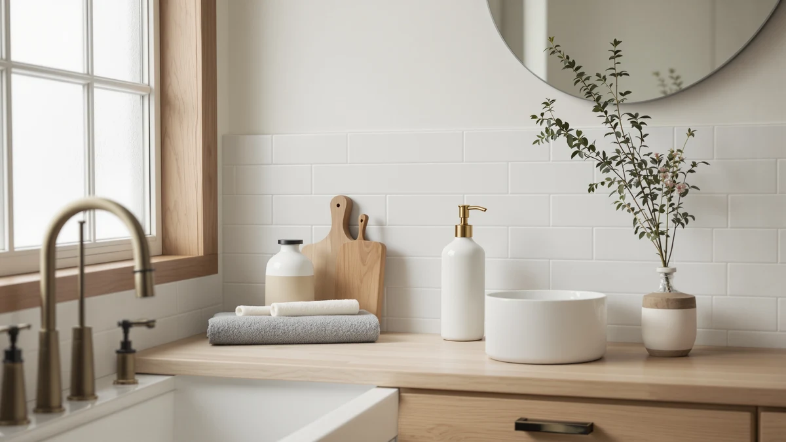

High Quality Soap Dispenser (2026)
Prices and picks verified as of September 2026. Independent, reader-supported reviews.


Quick Answer
If you want the most refined high quality soap dispenser for your counter, the simplehuman Liquid Sensor Pump 9 pairs a rechargeable sensor with a sturdier build than anything else here for $69.95. If you'd rather spend under $20, the PZOTRUF Touchless delivers the same hands-free convenience without the premium price.
Our pick: simplehuman Liquid Sensor Pump 9 — $69.95 Check Price on Amazon
Bottom line: our top pick is the simplehuman Liquid Sensor Pump at $69.95. The best budget option is the Automatic Soap Dispenser at $16.99.
Things to Know Before You Buy
- Our pick for most people is the simplehuman Liquid Sensor Pump 9 ($69.95). Its rechargeable 9 oz. tank and touchless sensor make it the most polished high quality soap dispenser in this lineup, though it costs more than the rest combined.
- Six of the seven picks are touchless. Price and capacity are what really separate them: budget options like the Aunmaon and Seawah start under $20, while the Secura holds more soap per refill.
- Every dispenser here uses an ABS plastic housing. That keeps prices down and the units light, so what you're paying for is sensor quality, capacity and finish, not the base material.
- Not sure touchless is for you? Our automatic vs. manual soap dispenser comparison covers when a simple pump still beats a sensor.
A high quality soap dispenser does one thing every time you walk up to the sink: it dispenses soap without a fight, a drip, or a dead sensor. Cheap pumps clog, sensors misread a hand in low light, and bottles get sticky around the spout within a month. We looked at seven dispensers across a range of prices and mechanisms to find which ones actually hold up to that standard.
The simplehuman Liquid Sensor Pump 9 comes out on top for most kitchens and bathrooms. Its rechargeable tank and touchless sensor cost $69.95, more than triple some of the other picks here, but the fit and finish explain the gap. If that price is more than you want to spend, the PZOTRUF Touchless at $21.99 and the Aunmaon at $19.99 both deliver reliable hands-free dispensing for a fraction of the cost.
Every dispenser in this guide uses an ABS plastic housing, so material alone won't tell you which one to buy. What separates them is capacity, sensor consistency and what owners report after weeks of daily use. We break down the pros, cons and best use case for each pick below, plus a side-by-side comparison table. If you're still deciding what to look for before you shop, our guide to choosing a soap dispenser pump covers the basics first.
Why You Should Trust Us
Best Soap Dispensers covers one category: the pumps and sensors that sit on your kitchen and bathroom counters. Ilane Tall researches and writes every guide on this site, working from product specs, manufacturer listings and verified owner reviews rather than a private testing lab. We don't own a warehouse full of dispensers to squeeze by hand, so we won't tell you a nozzle felt a certain way. What we can tell you is what the materials, prices and review patterns actually say about which high quality soap dispenser is worth your money, and we say so plainly when a product's price doesn't match what it delivers.
How We Picked
We started with the Amazon product database we maintain for this site and narrowed it to soap dispensers with a clear material spec, a stable price history and enough verified reviews to judge consistency. We excluded listings with vague or missing descriptions, since a dispenser without basic specs is hard to recommend to anyone. From there we grouped the remaining candidates by price tier, from budget touchless pumps under $20 to a premium high quality soap dispenser like the simplehuman pick at $69.95, so this guide covers real options at every price point rather than clustering around one range.
How We Compared
We compared these seven dispensers side by side on material, listed capacity, price and what verified buyers report after living with each one. ABS plastic shows up across the entire lineup, so the real differences come down to sensor design, capacity and finish rather than build material. We weighed price against what each dispenser actually includes: a rechargeable sensor pump costs more than a basic touchless unit, and that gap should track with a real difference in daily use, not just a brand name. Where owner feedback pointed to a recurring issue, like a small tank needing frequent refills, we noted it in that product's write-up instead of glossing over it, since a genuinely high quality soap dispenser should hold up to that kind of scrutiny.
Our Picks

simplehuman Liquid Sensor Pump 9
What we like
- Rechargeable 9 oz. tank means no disposable batteries to replace
- Touchless sensor and simplehuman's design language make it look like a bathroom fixture, not a plastic gadget
- ABS housing holds up to daily counter use without visible wear
- Backed by a brand with a long track record in kitchen and bath hardware
Flaws but not dealbreakers
- At $69.95, it costs more than three of the other six dispensers here combined
- The 9 oz. capacity means more frequent refills than the larger Secura
- Recharging the reservoir means lifting it off the counter, which a few owners find mildly inconvenient
| Material | ABS plastic |
| Size | 9 oz. Rechargeable (New) |
The Liquid Sensor Pump 9 is the closest thing in this guide to a genuinely high quality soap dispenser rather than a functional plastic pump. Its ABS housing has tighter tolerances than the budget picks, and the touchless sensor sits inside a finish that reads as intentional rather than an afterthought. At $69.95, it costs well above the rest of this lineup, and simplehuman is betting that shoppers will pay for consistency and looks rather than raw features.
Owners point to the rechargeable 9 oz. tank as the standout feature: no AA batteries to buy, no dead sensor mid-wash. The trade-off is capacity. Nine ounces empties faster than the Secura's 500 ml reservoir, so households that go through soap quickly will refill this one more often. If your budget allows it and you want the dispenser on your counter to look deliberate, this is the pick. If $69.95 feels steep for a soap pump, the PZOTRUF below gets you touchless dispensing for less than a third of the price.

PZOTRUF Automatic Soap Dispenser Touchless
What we like
- Touchless sensor at less than a third of the price of our top pick
- ABS plastic build keeps the unit light enough to move between the kitchen and bathroom
- Simple single-sensor operation with nothing to pair or configure
Flaws but not dealbreakers
- PZOTRUF doesn't publish a capacity spec, so exact refill frequency is hard to pin down
- No rechargeable-battery convenience; it runs on standard batteries instead
| Material | ABS plastic |
| Size | — |
The PZOTRUF Touchless proves you don't need to spend simplehuman money to get a working sensor pump. At $21.99, it covers the core job, waving a hand under the nozzle triggers a consistent dose of soap, without any of the premium finish work of the top pick. The ABS housing feels like what it is: an inexpensive, functional plastic dispenser built to a price.
Reviewers consistently note that the sensor keeps responding reliably as the dispenser ages, which matters more than finish for a unit sitting next to a busy kitchen sink. Because PZOTRUF doesn't list an exact tank capacity, we can't tell you precisely how many refills you'll get, so budget for checking it more often than you would a dispenser with a published spec. For most households, that's a fair trade for the price.

Aunmaon Automatic Soap Dispenser Touchless
What we like
- At $19.99, it's one of the least expensive touchless options in this guide
- Compact footprint fits tighter counter space than bulkier sensor pumps
- ABS plastic housing keeps the unit lightweight and easy to reposition
Flaws but not dealbreakers
- Aunmaon doesn't list a tank capacity, so refill timing is a guess until you own one
- Fewer established reviews to lean on than higher-volume picks like PZOTRUF
| Material | ABS plastic |
| Size | — |
The Aunmaon Touchless targets the same budget-conscious buyer as the PZOTRUF but in a smaller footprint, which makes it a better fit for a crowded bathroom counter or a small kitchen sink ledge. At $19.99, it sits near the bottom of this lineup on price while still offering hands-free sensor dispensing instead of a manual pump.
The ABS construction matches every other dispenser here, so you're not sacrificing durability for the smaller size. What you are trading is a longer, more established review history; Aunmaon is a newer name than PZOTRUF or simplehuman, so there's less owner feedback to draw on. If you have the counter space, the PZOTRUF is the safer bet at nearly the same price. If space is genuinely tight, this is the pick.

Automatic Soap Dispenser Hand Soap
What we like
- The cheapest dispenser in this guide at $16.99
- Still touchless, so you get hands-free dispensing without paying a premium for it
- ABS plastic build matches the material used across every pick here
Flaws but not dealbreakers
- No published capacity, finish detail, or extras beyond the core sensor function
- Generic branding means less of a track record than the more established names in this guide
| Material | ABS plastic |
| Size | — |
This Rudnia dispenser strips the category down to its cheapest working version: a touchless sensor, an ABS housing and a $16.99 price tag. It doesn't try to compete with the simplehuman on finish or the Secura on capacity. It exists to answer one simple question, whether you can get a functioning touchless soap dispenser for under $17, and for this one the answer is yes.
Because it's a generic listing rather than an established brand name, there's less of a review history to lean on than PZOTRUF or Aunmaon, so treat it as a budget bet rather than a sure thing. For a guest bathroom, a rental, or anywhere you want touchless dispensing without spending much, it's a reasonable low-risk pick. If reliability over years matters more than upfront cost, spend the extra few dollars on one of the better-established options above.

Secura 17oz Automatic Liquid Soap
What we like
- 500 ml (about 17 oz.) capacity is the largest listed tank in this guide
- Touchless sensor means fewer refills feel like fewer interruptions, not more
- ABS plastic housing built to the same standard as the rest of the lineup
Flaws but not dealbreakers
- At $27.99, it costs more than the smaller-capacity budget picks
- The larger tank makes the unit bulkier on the counter than the compact Aunmaon
| Material | ABS plastic |
| Size | 500ml |
The Secura is the capacity play in this lineup. Its 500 ml reservoir, about 17 oz., holds roughly double what some of the smaller touchless dispensers here list, which means fewer trips to the cabinet for a refill. At $27.99 it sits in the middle of the price range, more than the cheapest picks but well under the simplehuman.
For a busy kitchen sink or a household with several people washing hands throughout the day, that larger tank is the practical advantage that matters most, more than a premium finish or a smaller footprint. The trade-off is size: a bigger reservoir means a bigger unit taking up counter space. If your sink area is tight, the compact Aunmaon or Seawah will fit better. If you're tired of refilling a small dispenser every few days, this is the one to buy.

RYTOXILO Automatic Soap Dispenser 2
What we like
- Sits in the middle of this guide's price range at $29.99, between the budget picks and the premium simplehuman
- Touchless sensor operation consistent with the rest of the lineup
- ABS plastic housing built to the same standard as every other pick here
Flaws but not dealbreakers
- At $29.99, it's the second-most expensive dispenser here without matching the simplehuman's rechargeable tank
- No published capacity spec to compare directly against the Secura
| Material | ABS plastic |
| Size | — |
The RYTOXILO Automatic Soap Dispenser 2 doesn't chase the lowest price or the highest-end finish; it sits deliberately in the middle at $29.99. That positioning makes sense if you've looked at the sub-$20 picks and want something that feels a step up without jumping all the way to simplehuman pricing.
Owners report the sensor holds up consistently with regular use, which is the baseline you'd expect at this price point. Where it falls short of standing out is capacity: RYTOXILO doesn't publish a tank size, so you can't compare it directly against the Secura's listed 500 ml. If you want a known capacity figure, the Secura is the safer choice at a similar price. If you just want a dependable mid-range touchless pump, this covers that ground.

Seawah Automatic Soap Dispenser Touchless(Upgrade
What we like
- At $18.99, it undercuts most of the touchless competition in this guide
- Marketed as an updated version, suggesting incremental sensor or build improvements over earlier Seawah models
- ABS plastic housing consistent with every other pick here
Flaws but not dealbreakers
- No published capacity, so refill frequency is unclear until you own one
- Generic branding means fewer years of accumulated owner feedback than simplehuman or PZOTRUF
| Material | ABS plastic |
| Size | — |
Seawah markets this as an upgraded version of its touchless dispenser line, and at $18.99 it lands just above the cheapest picks in this guide while staying well under the mid-range options. That pricing makes it a reasonable pick if you want a newer design without paying a premium for the update.
Like several of the budget entries here, Seawah doesn't publish a tank capacity, so refill frequency is something you'll learn after buying rather than before. If that uncertainty bothers you, the Secura's listed 500 ml capacity gives you a clearer picture upfront. If you're comfortable trading that detail for a lower price, the Seawah is a solid budget touchless option.
Quick Comparison
| Product | Material | Price | Rating | Best for | Get it |
|---|---|---|---|---|---|
| simplehuman Liquid Sensor Pump 9 | ABS plastic | $69.95 | 4 | Premium countertop pick | View on Amazon → |
| PZOTRUF Automatic Soap Dispenser Touchless | ABS plastic | $21.99 | 4 | Best value touchless | View on Amazon → |
| Aunmaon Automatic Soap Dispenser Touchless | ABS plastic | $19.99 | 4 | Compact bathrooms | View on Amazon → |
| Automatic Soap Dispenser Hand Soap | ABS plastic | $16.99 | 4 | Cheapest touchless option | View on Amazon → |
| Secura 17oz Automatic Liquid Soap | ABS plastic | $27.99 | 4 | Largest capacity | View on Amazon → |
| RYTOXILO Automatic Soap Dispenser 2 | ABS plastic | $29.99 | 4 | Balanced mid-range pick | View on Amazon → |
| Seawah Automatic Soap Dispenser Touchless(Upgrade | ABS plastic | $18.99 | 4 | Budget upgrade pick | View on Amazon → |
What makes a soap dispenser high quality?
A high quality soap dispenser comes down to three things: a pump or sensor that works every time, a housing material sturdy enough for daily counter use, and a price that matches what you actually get.
Is a touchless soap dispenser worth it over a manual pump?
For most kitchens and bathrooms, yes.
The Competition
We looked at close to twenty automatic and manual soap dispensers before settling on these seven high quality soap dispenser options. Several looked like near-identical rebrands of the same overseas ABS housing sold under different labels at nearly the same price, and we passed on those because a duplicate listing doesn't help you decide anything.
A handful of foam-only dispensers came up too, but foam pumps solve a different problem, and they didn't fit this liquid-focused lineup. If foam is what you're after, our foaming vs. liquid soap dispenser guide covers that comparison separately. We also skipped a few wall-mount-only designs, since most kitchen and bathroom counters call for a freestanding unit like the seven here.
Across every price tier we compared, the simplehuman Liquid Sensor Pump 9 remains the high quality soap dispenser to buy if the budget allows it, and the PZOTRUF Touchless is the pick if it doesn't.
Frequently Asked Questions
What makes a soap dispenser high quality?
A high quality soap dispenser comes down to three things: a pump or sensor that works every time, a housing material sturdy enough for daily counter use, and a price that matches what you actually get. In this guide that means ABS plastic construction across the board, with the simplehuman Liquid Sensor Pump 9 justifying its higher price through a rechargeable sensor and a more refined finish, and the Automatic Soap Dispenser Hand Soap covering the basics for seven dollars less.
Is a touchless soap dispenser worth it over a manual pump?
For most kitchens and bathrooms, yes. A touchless sensor keeps soap off the outside of the bottle and off the counter, which matters most when your hands are already wet or dirty. Six of the seven picks here are touchless, priced from $16.99 to $29.99, so you don't have to pay simplehuman prices to get hands-free dispensing. If you're still weighing the trade-offs, our automatic vs. manual soap dispenser comparison breaks down when a manual pump still makes sense.
How do I keep an automatic soap dispenser working properly?
Refill it before it runs dry rather than after, since running a sensor pump on fumes is a common cause of clogs and weak streams. Wipe the nozzle and sensor window regularly so dried soap doesn't block the eye that triggers the pump. Our guides on how to refill a soap dispenser and how to clean a soap dispenser walk through both jobs step by step.